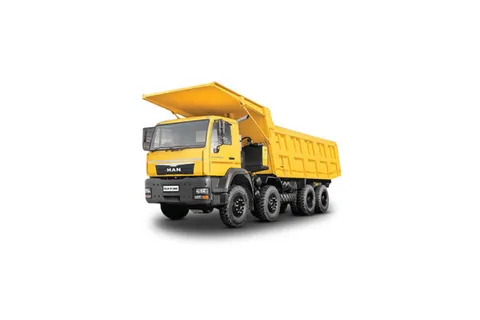
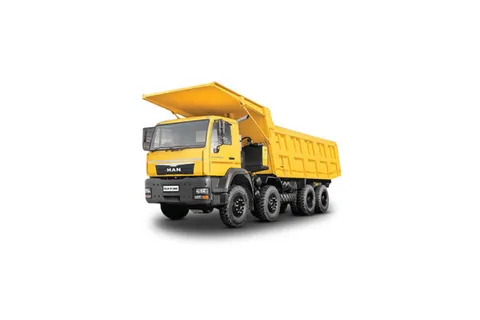

BOOK NOW
Sign in
More
BOOK NOW
Sign in
More
In today's rapidly evolving world, the transportation of goods plays a pivotal role in ensuring the smooth flow of commerce and meeting the diverse needs of consumers. This project delves into the intricacies of dynamic transport solutions, focusing on the efficient movement of goods ranging from animals to housing materials and various commodities. The fundamental objective is to streamline the process of transporting goods from their source to the intended destination, considering factors such as quantity, nature, and urgency.
Central to this endeavor is the meticulous selection of vehicles tailored to the specific requirements of the goods being transported. By assessing the capacity of each vehicle and matching it with the volume and characteristics of the goods, optimal transportation arrangements are made to maximize efficiency and minimize costs. This approach ensures that goods are transported in the most suitable manner, whether by trucks, trains, ships, or other modes of transport.
Furthermore, the project addresses the dynamic nature of logistics, wherein real-time adjustments are made to accommodate changing circumstances and demands. Advanced technologies, including GPS tracking, route optimization algorithms, and data analytics, are employed to enhance visibility and control throughout the transportation process. This enables swift decision-making and proactive measures to mitigate potential disruptions or delays.
.jpg) 

Through the implementation of dynamic transport solutions, this project aims to revolutionize the traditional approach to goods shipment, fostering agility, sustainability, and reliability in the logistics ecosystem. By harnessing innovation and strategic planning, it endeavors to optimize resource utilization, minimize environmental impact, and enhance overall supply chain efficiency.
In essence, this project signifies a paradigm shift in the realm of goods transportation, heralding a new era of flexibility, responsiveness, and effectiveness in meeting the diverse needs of industries and consumers alike.
The dynamic transport system operates through a seamless integration of various technologies and strategies: